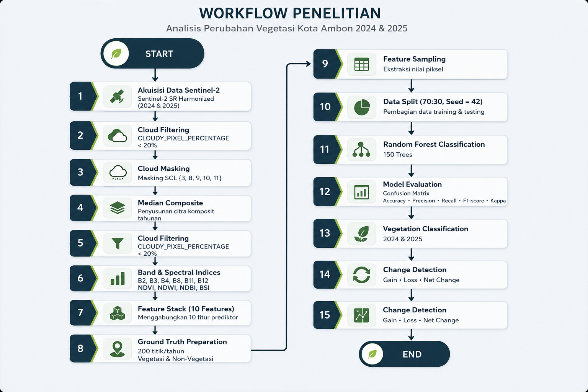

WEBGIS GEOAI KOTA AMBON
Memantau Perubahan Vegetasi Ambon melalui Citra Satelit dan Machine Learning
Dashboard ini menyajikan hasil klasifikasi vegetasi tahun 2024 dan 2025, lokasi penambahan vegetasi (gain), kehilangan vegetasi (loss), sampel ground truth, serta evaluasi model Random Forest secara interaktif.

KOTA
AMBON
Kota AmbonBersatu Manggurebe Maju
AMBON
MENGENAL WILAYAH STUDI
Mengapa Kota Ambon?
Ambon merupakan ibu kota Provinsi Maluku yang berada pada wilayah kepulauan dengan bentang alam pesisir dan perbukitan. Kondisi topografi, perkembangan kawasan perkotaan, serta pentingnya tutupan hijau bagi stabilitas lingkungan membuat perubahan vegetasi relevan untuk dipantau secara berkala.
Pemantauan berbasis satelit membantu melihat pola perubahan secara luas dan konsisten, termasuk area yang mengalami penambahan maupun kehilangan tutupan vegetasi.
FOKUS PREDIKSI
Apa yang Diprediksi?
Model melakukan klasifikasi biner pada setiap piksel menjadi dua kelas utama:
VegetasiNonvegetasi
Hasil klasifikasi 2024 dan 2025 kemudian dibandingkan untuk membentuk empat status perubahan: tetap nonvegetasi, gain vegetasi, loss vegetasi, dan tetap vegetasi.
DATA DAN TEKNOLOGI
Komponen Utama Analisis
Kombinasi data penginderaan jauh, sampel referensi, dan algoritma ensemble digunakan untuk menghasilkan informasi perubahan vegetasi.
Sentinel-2 SR Harmonized
Citra multispektral tahun 2024 dan 2025 dengan resolusi spasial 10 meter serta cloud filter di bawah 20%.
Feature Stack
Band B2, B3, B4, B8, B11, B12 dan indeks NDVI, NDWI, NDBI, serta BSI.
Ground Truth
400 titik referensi vegetasi dan nonvegetasi untuk sampling, pelatihan, dan pengujian model.
Random Forest
Algoritma ensemble 150 trees dengan pembagian 70% training dan 30% testing serta seed 42.
MULAI EKSPLORASI
Lihat perubahan vegetasi secara spasial
Aktifkan boundary, kecamatan, hasil klasifikasi, gain/loss, ground truth, dan feature samples pada peta interaktif.
PETA HASIL ANALISIS
Perubahan Vegetasi Kota Ambon 2024–2025
Eksplorasi layer administrasi, hasil klasifikasi, perubahan, ground truth, dan feature stack samples.
Resolusi spasial10 meter
Menampilkan ringkasan untuk seluruh Kota Ambon.
Catatan interpretasi peta
Hasil merupakan estimasi Random Forest dari Sentinel-2 resolusi
10 meter. Polygon kecil telah difilter agar WebGIS tetap ringan
dan hasil perubahan tetap perlu diverifikasi dengan data tambahan
atau pengecekan lapangan.
Memuat layer perubahan tutupan lahan…
METODOLOGI
Data dan Proses Analisis
Rangkaian pengolahan citra, pembentukan fitur, pelatihan model, evaluasi, dan publikasi hasil.
DIAGRAM WORKFLOW
Alur Metodologi Penelitian
Setiap tahap mengalir dari data mentah hingga visualisasi WebGIS.

METADATA
Dataset yang Digunakan
Catatan reproducibility: seed 42 digunakan agar pembagian training dan testing dapat dijalankan ulang secara konsisten.
VALIDASI MODEL
Evaluasi Random Forest
Hasil testing menjadi dasar utama untuk menilai kemampuan generalisasi model.
METRIK TESTING
Accuracy, Precision, Recall, F1
CONFUSION MATRIX
Aktual vs Prediksi
KONTRIBUSI FITUR
Feature Importance Random Forest
Nilai importance berasal dari output model Random Forest dan menunjukkan kontribusi relatif setiap fitur.
Berdasarkan output model terbaru, B12 merupakan fitur dengan kontribusi tertinggi, diikuti BSI dan B4.
PEMBAGIAN SAMPEL
Training dan Testing
TEMUAN UTAMA & REKOMENDASI
Insight Perubahan Vegetasi Kota Ambon
Informasi ini membantu menjawab apa yang berubah, di mana perubahan terjadi, seberapa besar tekanannya, dan tindakan apa yang perlu diprioritaskan.
TEMUAN UTAMA
Ringkasan yang Perlu Diperhatikan
Vegetasi meningkat secara bersih
Peningkatan bersih tidak otomatis berarti rehabilitasi; pengaruh musim, regenerasi alami, dan perbedaan kondisi citra tetap perlu dipertimbangkan.
Area loss tetap menjadi prioritas
Patch loss terbesar perlu diperiksa terutama bila berdekatan dengan permukiman, jalan, atau kawasan pengembangan.
Validasi lapangan tetap dibutuhkan
Hasil model sebaiknya menjadi alat screening awal sebelum digunakan dalam keputusan tata ruang atau pengawasan lingkungan.
STATUS UMUMPerubahan bersih positif
Memuat ringkasan perubahan…
PERLU PERHATIANArea loss tetap ditemukan
Memuat informasi kehilangan vegetasi…
PRIORITASVerifikasi patch terbesar
Gunakan zona prioritas indikatif sebagai lokasi pemeriksaan citra resolusi tinggi dan survei lapangan.
PERBANDINGAN TAHUNAN
Luas Vegetasi
STATUS PERUBAHAN
Komposisi Change Map
ANALISIS ADMINISTRATIF
Ranking Kecamatan dan Indeks Tekanan Vegetasi
Indeks tekanan = loss / vegetasi 2024 × 100%. Kategori bersifat analitis, bukan standar resmi.
Memuat ranking kecamatan…
PATCH TERBESAR
Top 5 Gain Vegetasi
PATCH TERBESAR
Top 5 Loss Vegetasi
INSIGHT SPASIAL
Makna Hasil
TINGKAT KEYAKINAN
Seberapa Yakin Hasil Ini?
Memuat tingkat keyakinan model…
REKOMENDASI KEBIJAKAN
Arah Tindak Lanjut Pemerintah Kota Ambon
Rekomendasi disusun sebagai dukungan keputusan dan sistem peringatan dini, bukan dasar tunggal penetapan pelanggaran.
Memuat rekomendasi kebijakan…
RENCANA IMPLEMENTASI
Roadmap Tindak Lanjut
Memuat roadmap implementasi…
CATATAN ANALISIS